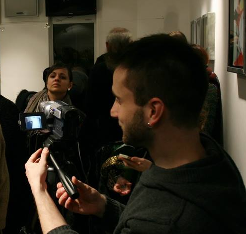

Nikola Cvetić
Birth date: 30.3.1986.
Adress: Ivankovačka 27, 11000 Belgrade
E-mail: cuekisa@yahoo.com
Phone number: +381642743527, +38112762201
Faculty of Medias and Communications, Singidunum University, Belgrade - average grade: 8,5
World Litterature, Faculty of Philology, Belgrade - half of credits in diploma.
III Belgrade High School, Belgrade
Video works:
Organisation:
Kulturforum - organisation, writing projects, technical support, audio-video editing.
Creative Europe - Horizon 2020 - volunteering and folowing concepts.
Nishvile Jazz Festivall - volunteering and supporting.
Advanced course for EU projects - to get to know all kinds of projects.
Photo works:
Audio-video editing:
- Adobe Premiere
- Steinberg Nuendo and Cuebase
Photo editing and design:
- Adobe Photoshop
Writting and editing:
- MS Office
- Adobe readers and editors
Web:
- HTML, CSS, Java Script, Wordpress, Github
English, Advanced. CAE course - Cambridge Advanced Exam (Owen Owen School, Belgrade)
French, middle level.
Italaian and russian - beginner level.
Volunteered at "Creative Europe" Conference, Kinoteka, Belgrade.
Finished course for Copywriting, Obuke i kursevi, Belgrade.
Finished advanced course for Writing projects for EU fundings, Obuke i kursevi, Belgrade.
Volunteer at "Nishvile" festival, Nis.
Driving license. Playing guitar.
Active recreative sport. Trained basketball.